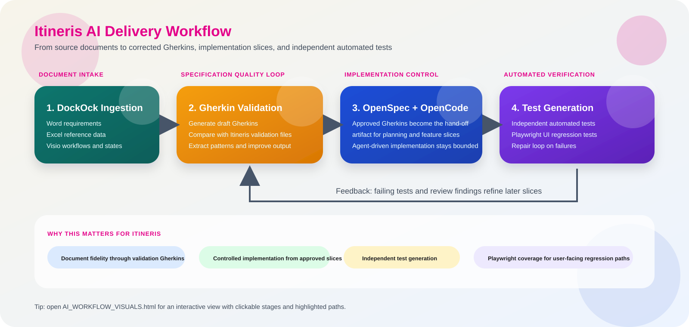
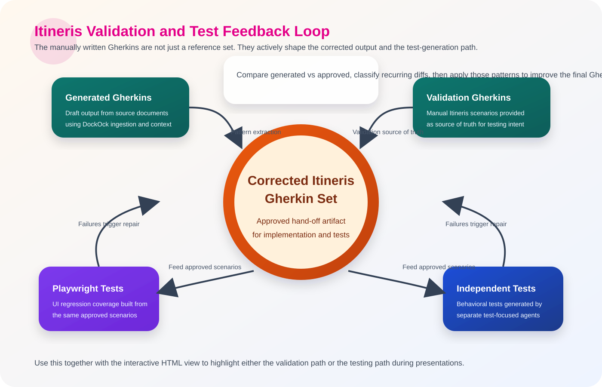
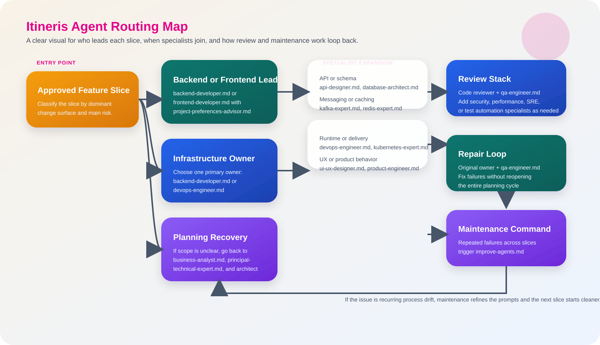
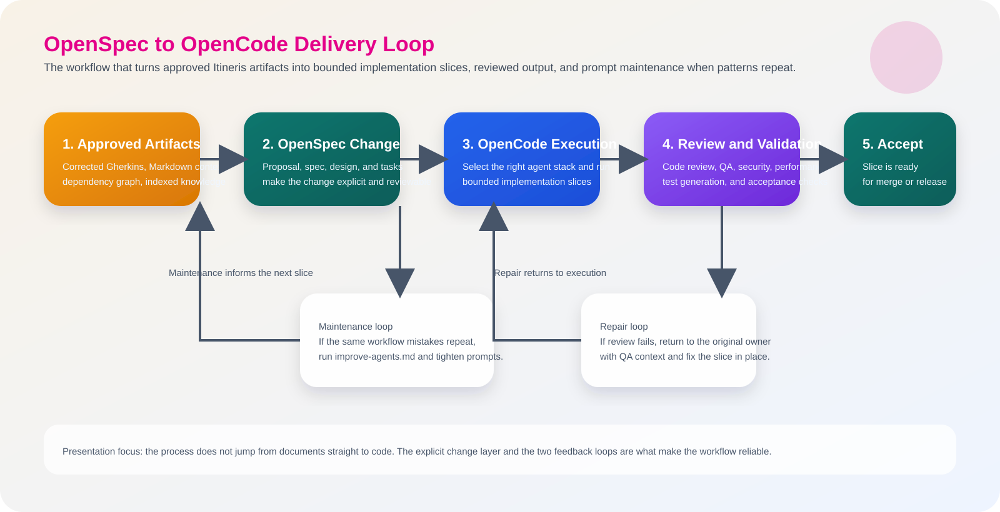

1. Workflow Overview

Document intake, validation, bounded implementation, and automated verification are one connected system.
This page compresses the playbook into one stakeholder message: Itineris source documents become corrected Gherkins, and those corrected Gherkins become the controlled hand-off for both implementation and automated testing.

Document intake, validation, bounded implementation, and automated verification are one connected system.

The manual Gherkins are not passive examples. They actively correct the generated output and strengthen the test-generation path.

One primary owner per slice. Specialists only when the risk profile justifies it.

OpenSpec defines the change. OpenCode executes bounded slices. Review, repair, and maintenance close the loop.